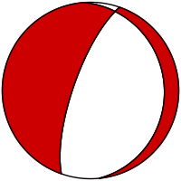
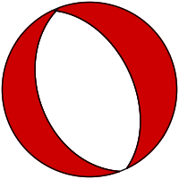
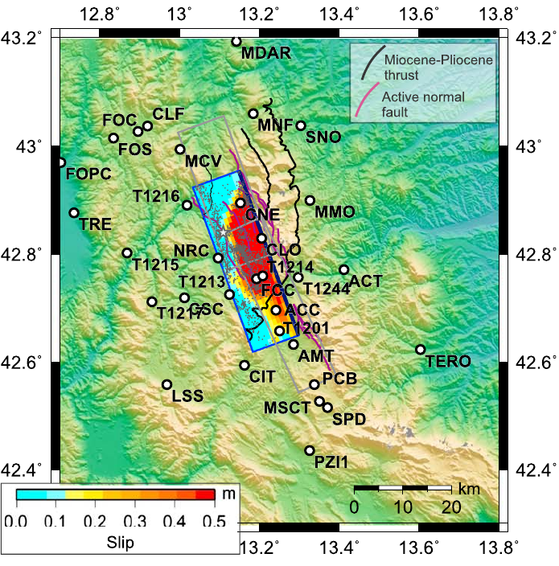
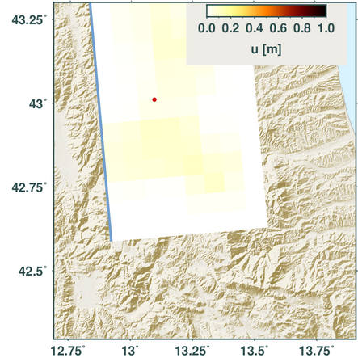

Early-Warning and Rapid ImpaCt Assessment with real-time GNSS in the Mediterranean
WP2 - Fast source inversion
Malte Metz1, 2, Torsten Dahm1, 2, Simone Cesca1, Rongjiang Wang2, Matthias Ohrnberger1, Lukas Lehmann1, Sebastian Heimann1, Marius Isken2, et al.
1University of Potsdam, 2GFZ Potsdam
Challenges in fast rupture characterization
- Complex rupture characterizations
➞ kinematic rupture effects
- Uncertainties
➞ reliability
Why do we need complex rupture characterizations?

static ground displacement (Pyrocko and Wang (2003, 2005, 2006))
➞ also origin estimate
Why do we need uncertainties?
➞ account for complex PDF
Structure of the talk
- Source estimation strategy
- Source models
➞ majorly used within Pyrocko/Grond
- Application to Norcia 2016 earthquake
- User interface
➞ Configuration
Source estimation strategy
Source estimation strategy
- Point (DC) Source

- Rectangular source
Heimann, 2011
- Pseudo dynamic rupture
Dahm et al., 2021
- Iterative Deconvolution and Stacking - IDS
Zhang et al., 2014, Diao et al., 2016, Zheng et al., 2020
Point (DC) Source
- Earthquake source = point
- 12 free parameters
➞ orientation partially constrained from prior
- robust
➞ derived from low frequency waveforms
- fast
- PDF transfer and exploration
➞ dependency on previously generated PDF
Point (DC) Source - Norcia 2016
13 stations, 50-100 km epicentral distance
Point (DC) Source - Norcia 2016

13 stations, 100-200 km epicentral distance
Point (DC) Source - Norcia 2016

40 stations, 100-300 km epicentral distance
➞ narrower PDFs
Rectangular Source
- Kinematic finite fault
➞ homogeneous slip, extent, origin
- 13 parameters (fixed based on DC Source)
➞ 5 free parameters (origin, extent, slip)
- Fast
➞ test several models per second
Rectangular Source
60 stations, 0-100 km epicentral distance
Rectangular Source
76 stations, 0-200 km epicentral distance
Rectangular Source
98 stations, 0-300 km epicentral distance
Rectangular Source
Pizzi et al., 2017
Pseudo dynamic rupture
- Dynamic finite fault
➞ hetereogeneous slip, extent, origin
- Explains rupture physics
➞ stress drop
- 13 parameters (fixed based on DC Source)
➞ 5 free parameters (origin, extent, stress drop)
Pseudo dynamic rupture
60 stations, 0-100 km epicentral distance
Pseudo dynamic rupture
78 stations, 0-200 km epicentral distance
Pseudo dynamic rupture

101 stations, 0-300 km epicentral distance
Pseudo dynamic rupture
Pizzi et al., 2017
Iterative Deconvolution and Stacking - IDS
- Kinematic finite fault
➞ hetereogeneous time dependent slip
- No. of parameters based on rupture extent(fixed based on DC and PDR Source)
➞ slip on each fault patch is free
- Fast
➞ few minutes max. for a run
Iterative Deconvolution and Stacking - IDS
30 stations, 0-100 km epicentral distance
Iterative Deconvolution and Stacking - IDS
30 stations, 0-200 km epicentral distance
Iterative Deconvolution and Stacking - IDS
30 stations, 0-300 km epicentral distance
Iterative Deconvolution and Stacking - IDS
Pizzi et al., 2017
Configuration - General
--- !ewrica.si.demonstrator.DemonstratorConfig
magnitude_groups:
- !ewrica.si.demonstrator.MagnitudeGroup
magmin: 6.0
magmax: 9.0
..
sampling_groups:
- !ewrica.si.demonstrator.SamplingGroup
sampling_phases:
- !ewrica.si.demonstrator.InjectionSamplingPhase
..
engine_config: !ewrica.si.demonstrator.EngineConfig
store_dirs:
- '/home/malde/src/gf_stores'
- '/home/malde/src/gf_ids'
..
create_report: true
Outlook
- Include PDFs of initial solution in DC Source runs
- Include PDFs of Priors in initial DC Source runs
- Enhance location estimate
Questions
- When do you consider a model as "good"?
- How to exclude corrupted records?
- How much do we trust the prior?
Grazie for your attention.
Appendix
Station coverage

Waveform fits - Point Source
Waveform fits - Rectangular Source

Waveform fits - Pseudo Dynamic Rupture
Waveform fits - IDS
Configuration - Magnitude Groups
- !ewrica.si.demonstrator.MagnitudeGroup
magmin: 6.0
magmax: 9.0
tmin: '{stored:begin}'
tmax: '{vel_surface:2.0}'
tfade: 30.
fmin: 0.01
fmax: 0.03
fmax_extended: 0.05
distance_nearfield:
- 0.0
- 100000
distance_farfield:
- 10000
- 300000
ranges:
depth: !pf.Range
start: 1000.0
stop: 35000.0
time: !pf.Range
start: -20.0
stop: 20.0
relative: 'add'
duration: !pf.Range
start: 5.
stop: 40.
step: 1.
lateral: !pf.Range
start: -25e3
stop: 25e3
apply_for: ['mt', 'rs', 'pdr']
channels:
- 'Z'
- 'R'
Configuration - Sampling Groups
- !ewrica.si.demonstrator.SamplingGroup
sampling_phases:
- !ewrica.si.demonstrator.InjectionSamplingPhase
config: !ewrica.si.invert.SourceInjectionConfig
time_reference: 'centroid'
nucleation_x: [0.]
nucleation_y: [0.]
tractions: [0.5e6, 1e6, 2.5e6]
neamthm18_limit: !ewrica.si.invert.NEAMTHM18Limit
quantity: 'cumulative_probability_max'
target_value: 1.0
vmin: 1200.0
grid: [0.0]
depth_shifts: [0.0]
magnitude_shifts: [0.0]
- !ewrica.si.demonstrator.UniformSamplingPhase
iterations: 2000
apply_for: ['mt']
label: 'fast'